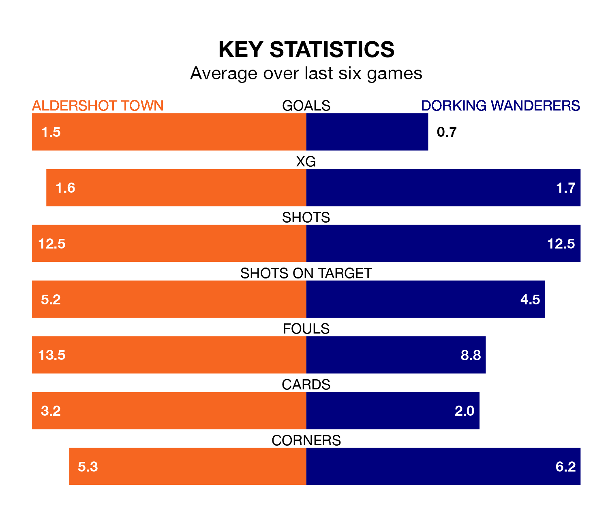

Aldershot Town are heavy favourites to keep all three points at home in Monday's kick-off against Dorking Wanderers.
The Shots, who sit eighth in the National League with 41 games played, are priced at 1.6 to seal victory at the Electrical Services Stadium.
Sitting 15 places and 22 points behind them in the table, Dorking are 4.2 to win with *Betting Company*, while the draw is at 4.0.
Aldershot are in mixed form in the National League, with three wins and a draw from their last six games.
With no wins and a draw over that period, Dorking's form is much worse – they have taken one point from 18, compared to Town's 10.
With 47 goals in 41 games so far this season, Wanderers are the league's third-lowest scorers with 1.1 goals per game. And they are conceding more than average, letting in 75 goals at a rate of 1.8 per game.
The Shots, meanwhile, are above average scorers, with 1.7 goals per game, compared to a league average of 1.5. They have conceded 1.8 goals per game.
In the last five years, Aldershot and Dorking have played each other on four occasions. Aldershot won three of them and Dorking one.
On average, the Shots scored 1.8 goals and Wanderers 0.5 in those matches.
Their last meeting was on October 28, when Dorking won 2-1 at home.
Aldershot's last match was on Friday, a 4-0 loss against Maidenhead United.
Dorking lost 2-0 against Bromley last time out, also on Friday.
Updated: 10:31 (UTC), 31/03/24